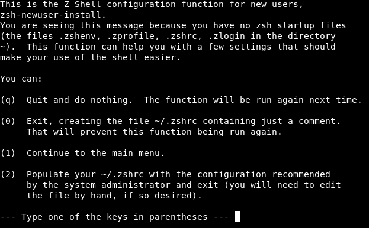
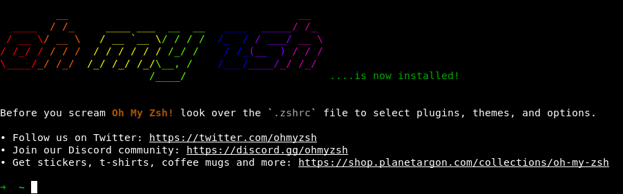
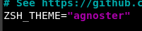
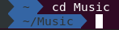

Ubuntu 에 Oh My Zsh 설치하기
설치전 요구사항
-
zsh 설치 되어 있어야함 (V5.0.8 또는 그 이상)
-
Curl or Wget 이 설치되어 있어야함
-
Git 이 설치 되어 있어야함 (V2.4.11 또는 그 이상)
-
설치 command
$ sudo apt install curl wget git -
설치 결과 화면

-
터미널 기본 셀 변경
chsh -s $(which zsh)
-
zsh 를 설치 후 chsh 명령어를 통해 기본 shell 을 변경
-
터미널을 재시작 하면 자동으로 zsh 설정 화면이 나오는데, 0을 입력해서 파일 생성만 한다.

OH-MY-ZSH 설치
$ sh -c "$(curl -fsSL https://raw.github.com/ohmyzsh/ohmyzsh/master/tools/install.sh)"
OR
$ sh -c "$(wget https://raw.github.com/ohmyzsh/ohmyzsh/master/tools/install.sh -O -)"
-
설치 결과 화면 
-
.zshrc 폴더를 열고 테마를 바꿔줍니다.
vim ~/.zshrc

-
하기 링크에서 원하는 테마로 선택해서 바꿔주면 됩니다. https://github.com/ohmyzsh/ohmyzsh/wiki/themes
-
agnoster 테마로 변경 완료

-
터미널을 재시작 하면 바뀐 터미널을 확인 가능 합니다.
